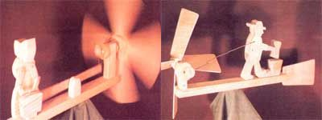

Add character and charm to your home-and watch the weather, too-with ...
There comes a time in even the busiest of days when we really must-no matter how important the task-rest our backs and minds. However, to quiet the little twinge of guilt that comes from leaving the main job (or perhaps just to give direction to the period of relaxation), many folks occupy themselves, while resting, with an activity of less "importance".
I call these interludes "puttering time", and I've come to realize that just such odd stolen moments were likely responsible for many of the cherished wooden toys ...the whittled kitchen gadgetry ...the primitive art ...and even the heirloom furnishings of another era. A case in point is the wind vane: a spare-time-made gimmick that demonstrates the inventiveness of the builder, adds charm and character to the home place, and is simply fun to make and watch.
THE WOODCHOPPER
Each of the three spinners illustrated here can be constructed in an hour or two (depending on the manual skill and whims of the builder) out of nothing more than a few scraps from the workshop floor and a little imagination.
Probably the most traditional of these is "The Woodchopper", a design that's been repeated often-with modifications -over the years. A model of this particular pattern chopped incessantly on my Uncle Roy's-barn for over half a century ...until the building finally collapsed after years of neglect and a heavy snow. (I like to think that the little man was still hewing away as the creaky structure fell!) Its direct descendant also graced my Alaskan homestead ...merrily cutting wood through the lead-gray days of winter.
The stout fellow-like his companion, "The Saw Wielder"-is a wind-quartering vane that's operated by the breeze blowing across the blades, rather than through them. With this novel arrangement, a relatively small fan can produce the energy requited to drive the mechanism of the whirligig. And, although only a zephyr is necessary to start the figure chopping (or sawing), the spinner doesn't speed up appreciably in stronger gusts ...a factor which greatly extends the life of the wooden axles!
EVER SO EASY!
Construction begins with the assembly of the small fan, whose blades (as well as the tail vane) are cut from 1/8" plywood. In the hub (it's simply a short section of thick dowel), cut four slots at about a 15° diagonal ...glue the blades in place ...and inset a 1/4" dowel to serve as a drive shaft. Be sure to coat the shaft generously with soap (which will lubricate the action for months) be/ore slipping it through the 5/16" bushing.
The next step-which is the key to the operation of any similar whirligig-is to build a simple cam, consisting of a small wooden disk into which a short dowel is eccentrically set, as shown in the accompanying sketches. The distance from the center of the disk to the dowel ("X" on the sketch) will determine how active the chopper becomes. In this design, X = 1 " ...which gives the figure plenty of action. When it's completed, the cam is glued securely to the back end of the wooden drive shaft, as shown.
THE WASHERWOMAN
"The Washerwoman" wind vane is of the more usual front-fan design. Its blades are set, diagonally, on a 2"-square hub fashioned as sketched. Because the direction of energy must be changed (since the propeller turns on a plane which is at right angles to the line of movement of the scrubber's arms), it's necessary to use a long jackbar arrangement, operating on the fulcrum-and-lever principle, to provide the action. A tail vane, however, isn't required, as the washerwoman figure will keep the fan aimed into the wind.
After the moving parts have been assembled, screw or glue the "tub" in front of the figure. Then, as the wind turns the blades, the lever will cause the jointed arms to move up and down in a "scrubbing" motion.
The construction of each one of these whirligig vanes is pretty self-explanatory. Besides, giving exact patterns and dimensions for all of the parts would result in a gaggle of identical wind vanes popping up here and there. It would seem a far better use of "puttering time" if each person built a vane according to his or her own skills and inclinations (painting it if desired), rather than simply copying someone else's handiwork.
After all, it's the "original touch" that turns spare-time work into treasure.
|
 Russ Mohney |
|
|